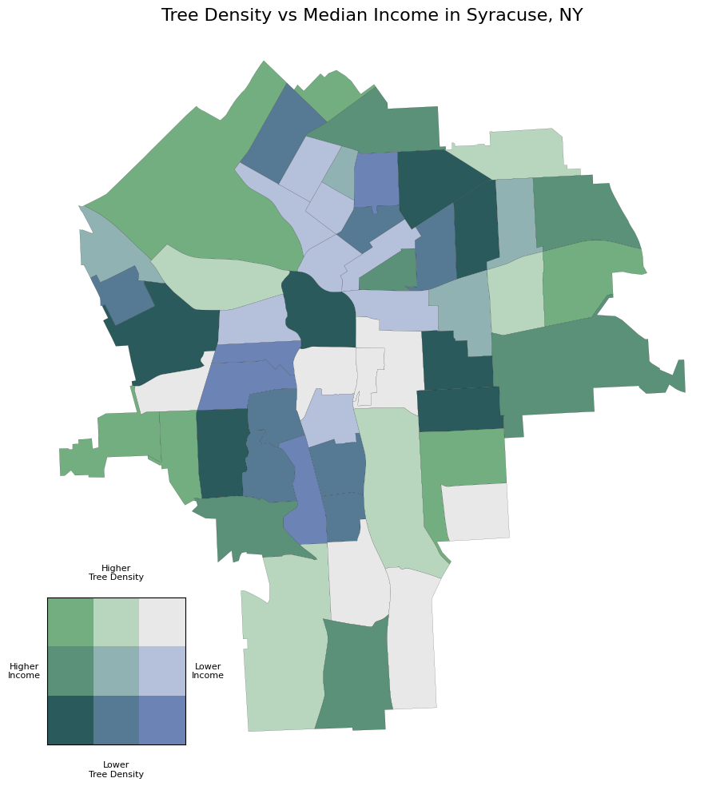
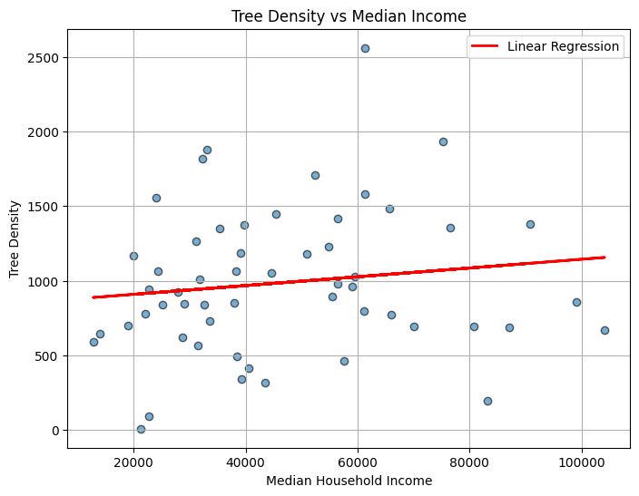
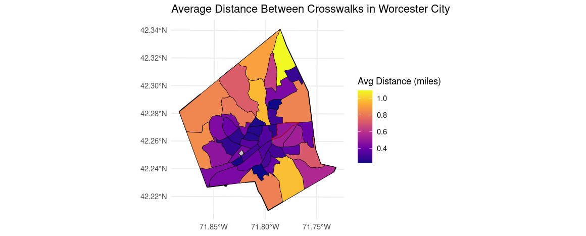
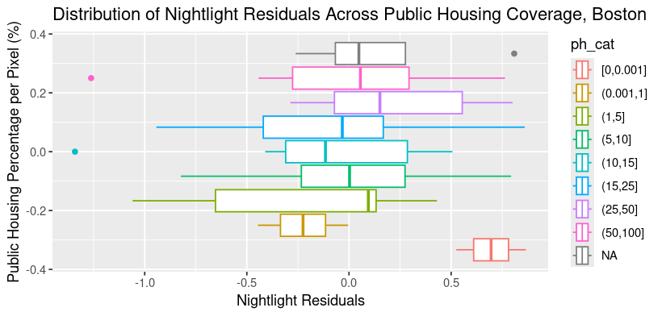

<!--Meta--> 
<meta charset="UTF-8"> 
<meta name="viewport" content="width=device-width, initial-scale=1.0">
<title>GIS Portfolio</title>

<!--Header Style-->
<style>
  body {
    font-family: 'Inter', sans-serif;
    background-color: #f4f4f9;
    margin: 0;
    padding: 0;
  }

  header {
    background-color: #ab91b8;
    padding: 2em 1em;
    color: white;
    text-align: center;
    border-radius: 0 0 12px 12px;
    box-shadow: 0 4px 10px rgba(0,0,0,0.1);
  }

  header h1 {
    margin: 0;
    font-size: 2.5em;
    font-weight: 600;
  }

  nav {
    margin-top: 1em;
  }

  nav a {
    color: white;
    text-decoration: none;
    margin: 0 12px;
    font-weight: 600;
    font-size: 1.05em;
    padding: 6px 10px;
    border-radius: 6px;
    transition: background-color 0.3s ease, color 0.3s ease;
  }

  nav a:hover {
    background-color: rgba(255, 255, 255, 0.2);
    color: #fff;
  }

  .hidden { display: none; }

  pre code {
    display: block;
    background: #1e1e1e;
    color: #dcdcdc;
    font-family: "Fira Code", monospace;
    font-size: 0.9em;
    padding: 1em;
    border-radius: 8px;
    overflow-x: auto;
    line-height: 1.5em;
    white-space: pre;
  }

  button {
    margin-top: 0.5em;
    padding: 0.5em 1em;
    border: none;
    background-color: #ab91b8;
    color: white;
    border-radius: 6px;
    cursor: pointer;
    transition: background-color 0.3s ease;
  }

  button:hover { background-color: #9976a5; }
  button:active { background-color: #87608e; }
</style>

<!--Header-->
<header>
  <h1>Jena Klimaszewski</h1>
  <nav>
    <a href="index.html">About Me</a>
    <a href="Resume.html">Resume</a>
    <a href="GISPortfolio.html">GIS Portfolio</a>
    <a href="writingsamples.html">Writing Samples</a>
  </nav>
</header> 

<section style="max-width: 1100px; margin: 3em auto; padding: 2em;">
  <h2 style="text-align: center; font-size: 2.2em; color: #b0355b; margin-bottom: 2em;">GIS Portfolio</h2>

  <!-- Syracuse Tree Density Analysis -->
  <div style="display: flex; flex-wrap: wrap; gap: 2em; margin-bottom: 3em; justify-content: center; align-items: flex-start;">
    <!-- Map -->
    <div style="flex: 1; min-width: 300px; max-width: 500px;">
      <a href="Images/syrtreedens_map.png" target="_blank">
        
      </a>
      <p style="margin-top: 0.5em;">
        This project explored the relationship between urban greenery and socioeconomic status in Syracuse, NY. Using Python with GeoPandas and Census data, I created a bivariate choropleth map comparing tree density with median household income at the census tract level. Data was sourced from the Syracuse Data Portal.
      </p>
    </div>

    <!-- Scatterplot -->
    <div style="flex: 1; min-width: 300px; max-width: 500px;">
      <a href="Images/syr_scatterplot.png" target="_blank">
        
      </a>
      <p style="margin-top: 0.5em;">
        This scatterplot shows tree density versus median household income across Syracuse census tracts. Pixels with higher income tend to have slightly higher tree density, but the correlation is weak.
      </p>

      <!-- PDF Button -->
      <button onclick="window.open('PDFs/Jklimaszewski_TreesReport.pdf', '_blank')">View Full Syracuse Trees Report</button>

      <!-- Python Code Snippet -->
      <button onclick="document.getElementById('python-snippet').classList.toggle('hidden')">Show Python Code Snippet</button>
      <pre id="python-snippet" class="hidden" style="margin-top: 0.5em; background: #f5f5f5; padding: 1em; border-radius: 6px; overflow-x: auto;">
<code>tracts_full['income_quantile'] = pd.qcut(tracts_full['B19013_001E'], q=3, labels=[1,2,3])
tracts_full['tree_quantile'] = pd.qcut(tracts_full['tree_density'], q=3, labels=[1,2,3])
tracts_full['bivariate_class'] = tracts_full['income_quantile'].astype(str) + "-" + tracts_full['tree_quantile'].astype(str)

bivariate_colors = {
    '1-1': '#e8e8e8', '1-2': '#b5c0da', '1-3': '#6c83b5',
    '2-1': '#b8d6be', '2-2': '#90b2b3', '2-3': '#567994',
    '3-1': '#73ae80', '3-2': '#5a9178', '3-3': '#2a5a5b'
}
tracts_full['color'] = tracts_full['bivariate_class'].map(bivariate_colors)

tracts_full.plot(color=tracts_full['color'], edgecolor='black', linewidth=0.1)</code></pre>
    </div>
  </div>

  <!-- Worcester Pedestrian Analysis -->
  <section style="margin-bottom: 3em;">
    <h2 style="text-align: center; font-size: 2em; color: #b0355b; margin-bottom: 1.5em;">Worcester Pedestrian Infrastructure Analysis</h2>
    <div style="display: flex; flex-wrap: wrap; gap: 2em; justify-content: center; align-items: flex-start; margin-bottom: 2em;">
      
      <!-- QGIS Map -->
      <div style="flex: 1; min-width: 300px; max-width: 500px;">
        <a href="Images/busstopsshrews.png" target="_blank">
          
        </a>
        <p style="margin-top: 0.5em;">
          For a group project, I analyzed a census tract in Worcester with multiple pedestrian safety incidents. This QGIS map shows bus stops in the Upper Shrewsbury Census Tract to examine transit accessibility. Data came from the US Census and Worcester Open Data Portal.
        </p>
      </div>

      <!-- R Crosswalk Map -->
      <div style="flex: 1; min-width: 300px; max-width: 500px;">
        <a href="Images/distancebtwncrosswalks.png" target="_blank">
          
        </a>
        <p style="margin-top: 0.5em;">
          This R map analyzes the spatial distribution of crosswalks at the census tract level, including average distances between them to evaluate pedestrian infrastructure. This project used R packages including <code>sf</code>, <code>dplyr</code>, and <code>ggplot2</code>.
        <button onclick="document.getElementById('nightlight-snippet').classList.toggle('hidden')">Show R Code</button>
        <pre id="nightlight-snippet" class="hidden"><code>
### Creating Boxplot
### Creating residual tibble
rcl <- cbind(c(0, 0.001, seq(1, 15, 1)), c(0.001, seq(1, 16, 1)), 1:17)
data_stk <- mask(mask(c(bos_avg, income_mask, ph_mask, pd_mask), income_vect), bos_bound)
data_stk <- c(data_stk, classify(data_stk[[3]], rcl, include.lowest = TRUE))
names(data_stk) <- c("lights", "income", "ph_pct", "pop", "ph_cat")
data_tbl <- as.data.frame(data_stk) %>% na.omit() %>% as_tibble()

data_tbl %>% group_by(ph_cat) %>% summarize(mean(lights))

lgt_resid <- data_complete$lgt_resid
data_tbl$lgt_resid <- lgt_resid
breaks <- c(0, 0.001, 1, 5, 10, 15, 25, 50, 100)  
data_tbl$ph_cat <- cut(data_tbl$ph_pct, breaks = breaks, include.lowest = TRUE)

ggplot(data_tbl) + 
  geom_boxplot(aes(x = lgt_resid, color = ph_cat)) +
  labs(x = "Nightlight Residuals",
       y = "Public Housing Percentage per Pixel (%)", 
       title = "Distribution of Nightlight Residuals Across Public Housing Coverage, Boston")</code></pre>
      </div>
    </div>
  </section>

  <!-- Boston Nightlight Analysis -->
  <section style="margin-bottom: 3em;">
    <h2 style="text-align: center; font-size: 2em; color: #b0355b; margin-bottom: 1.5em;">Boston Nightlight Analysis</h2>
    <div style="display: flex; flex-wrap: wrap; gap: 2em; justify-content: center; align-items: flex-start; margin-bottom: 2em;">
      <!-- Boxplot -->
      <div style="flex: 1; min-width: 300px; max-width: 500px;">
        <a href="Images/ph_bp_bos.png" target="_blank">
          
        </a>
        <p style="margin-top: 0.5em;">
          For a group project building on previous student work, I analyzed Boston using census and NASA nightlight data. The boxplot shows nightlight residuals by public housing coverage. Pixels with 25%-50% coverage have the highest residuals, and 50%-100% coverage the second highest. R packages used: <code>terra</code>, <code>tidycensus</code>, <code>tigris</code>, <code>dplyr</code>, <code>ggplot2</code>.
        </p>
      </div>

      <!-- Code Snippet -->
      <div style="flex-basis: 100%; margin-top: 1em;">
        <button onclick="document.getElementById('bos-nightlight-snippet').classList.toggle('hidden')">Show R Code Snippet</button>
        <pre id="bos-nightlight-snippet" class="hidden" style="margin-top: 0.5em; background: #f5f5f5; padding: 1em; border-radius: 6px; overflow-x: auto;">
<code>### Creating Boxplot
### Creating residual tibble
rcl <- cbind(c(0, 0.001, seq(1, 15, 1)), c(0.001, seq(1, 16, 1)), 1:17)
data_stk <- mask(mask(c(bos_avg, income_mask, ph_mask, pd_mask), income_vect), bos_bound)
data_stk <- c(data_stk, classify(data_stk[[3]], rcl, include.lowest = TRUE))
names(data_stk) <- c("lights", "income", "ph_pct", "pop", "ph_cat")
data_tbl <- as.data.frame(data_stk) %>% na.omit() %>% as_tibble()

data_tbl %>% group_by(ph_cat) %>% summarize(mean(lights))

lgt_resid <- data_complete$lgt_resid
data_tbl$lgt_resid <- lgt_resid
breaks <- c(0, 0.001, 1, 5, 10, 15, 25, 50, 100)  
data_tbl$ph_cat <- cut(data_tbl$ph_pct, breaks = breaks, include.lowest = TRUE)

ggplot(data_tbl) + 
  geom_boxplot(aes(x = lgt_resid, color = ph_cat)) +
  labs(x = "Nightlight Residuals",
       y = "Public Housing Percentage per Pixel (%)", 
       title = "Distribution of Nightlight Residuals Across Public Housing Coverage, Boston")</code></pre>
      </div>
    </div>
  </section>

  <!-- ArcGIS Dashboard -->
  <div style="display: flex; flex-wrap: wrap; gap: 2em; margin-bottom: 3em; justify-content: center; align-items: center;">
    <a href="Images/arcgisdashboard.png" target="_blank">
      
    </a>
    <div style="flex: 2; max-width: 500px;">
      <h3>ArcGIS Dashboard</h3>
      <p>For an undergraduate course, I built an ArcGIS Dashboard mapping food pantries in Worcester, MA and showing bus stops within 400 meters. I used buffers and spatial joins to identify bus stops in those zones. The dashboard visualizes transit accessibility to food resources. If I were to add to this project, I would include a grocery store toggle. This project was meaningful because I worked at my university's pantry at the time, and it was later included in a student-created resource guide.</p>
    </div>
  </div>

  <!-- ArcGIS Cartography -->
  <div style="display: flex; flex-wrap: wrap; gap: 2em; margin-bottom: 3em; justify-content: center; align-items: center;">
    <a href="Images/columbiacastresources.jpg" target="_blank">
      
    </a>
    <div style="flex: 2; max-width: 500px;">
      <h3>ArcGIS Cartography</h3>
      <p>I designed an ArcGIS map of community resources in The Port neighborhood of Cambridge, MA for an affordable housing proposal competition. The map shows important amenities such as food access points and schools, demonstrating that the area is well-resourced for potential residents.</p>
    </div>
  </div>
</section>
